Hello, I'm Darniel Zidane Garcia from BSEMC-GD191.
You can call me Zai, Zi, or simply Z. Darniel or Zidane are also acceptable.
Video games are the main reason why I chose BSEMC - Game Development.
I want to share the experience it gave me when I first played a video game. The experience of victory and people appreciating your work in-game through NPC’s and their letters they give to you when you finish a quest. It was very touching and that had an impact to me and thus, I decided to enroll in BSEMC-GD.
I am also into photo editing and video editing but I'm still practicing my skills when it comes to those terms.
Moving on to my expectation for this class. I would love to learn about user interface and user experience, how to satisfy clients and such. Tips and tricks to improve UI/UX.
My favorite application is currently Adobe Premiere since I am into video editing. I like editing random clips taken by me to provide entertainment to other people. As of now I do not have a lot of vines to present and some of which are just for practicing the application’s features such as green screen, GIFs and other effects offered by the application itself. Some of my works will be presented below.
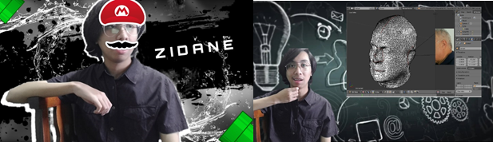
This is me the first time I started using and handling green screen for GEOMTRI Final Project
I also find video editing fun because I provide entertainment not just to my friends but also to my family. I tend to like seeing people laugh about the jokes I made as well as vines if ever.
I used to utilize Sony Vegas Pro in the last few years but since I want to gain more knowledge in the “Adobe World” I decided to move to Adobe Premiere even though it was hard at first because the application offers a lot of tabs and it was overwhelming.
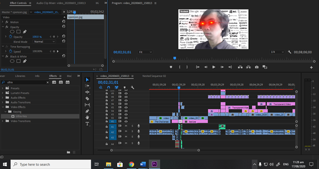
After watching a video of a youtuber explaining the different tabs inside the application, I can tell that I am now familiarized with the tabs and the features each of them has to offer.
My most favorite feature of Adobe Premiere Pro as of the moment is their green screen, I will be sharing screenshots as an example :D
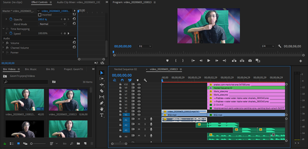
First step would be: Arrange all the files in this order from top to bottom:
Your video with a background of green, your chosen background, and finally your audio file
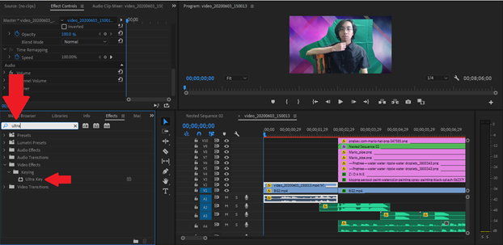
After, head to “Effects” tab and search for “Ultra Key” this will be your next step for the green screen tutorial
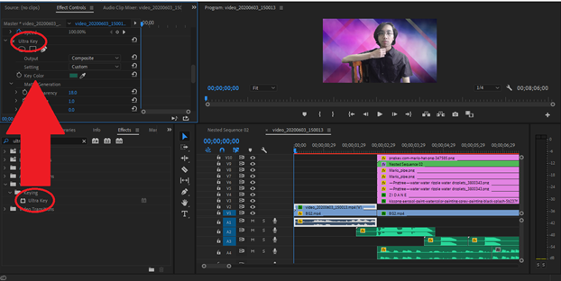
After locating ‘Ultra Key’ tab, click and drag it into Effect Controls which can be found above it. And then check the Key color and use the eyedropper tool to copy our background color.
After this step, you will notice that your background will instantly change to your chosen background, and voila! You now know how to do green screen in Adobe Premiere Pro.
If this tutorial helped you, please like and subscribe to my channel and ring that bell button hard! (Just kidding) 😊
Overall, the user interface is overwhelming at first or when you are a complete beginner but once you watched a video or two, you will be familiar with the tabs and use them efficiently.
Date: 07/09/20
Category: A1
Personas
A2
Persona # 1: Cake
“The cake is a lie” - Portal
Name: Klyde Rodriguez
Age: 20
Education: Bachelor of Science in Game Design
Occupation: Video game designer
Marital Status: Married
Summary:
>Designs and adds different kinds of artworks such as ally or enemy models that can be used in the games, they are currently making which is a role-playing game.
>His criteria for success would be when he satisfies the customer/s in the quality of the models he makes.
Needs:
>Excellent quality of the rendered model
>Models will provide impact in the target audience which is currently teenagers
>Interactive models
>Sweet models such as cake, donuts.
Values:
>Detailed planning
>Clear communication
>Transparency
>Time-conscious
Fears:
>Failing and disappointing clients
>Low quality of work
>Failing to submit on time
Persona # 2: Fita
“You gotta risk it, to get the biscuit.” – Jimmy Falcon
Name: Niel Ambion
Age: 26
Education: Bachelor of Science in Entertainment and Multimedia Computing Major in Game Development
Occupation: Video game programmer
Marital Status: Single, with five kids
Summary:
>Studies different kinds of algorithms that can contribute to the open world game he is developing right now.
>His criteria for success would be when he successfully executes the code as well as no bugs occurs when he is testing it.
Needs:
>Good quality models
>Model/s and artwork/s that he can use efficiently when coding as well as testing his algorithms
>Interactive models
>Excellent user experience
>Biscuits
Values:
>Clear communication
>Transparency
>Self-paced progress
>No pressure environment
Fears:
>Failing and disappointing clients
>Bugs and errors
>Tedious codes
>Not being understood by teammates
Persona # 3: Nugget
“Give me the nuggets”
Name: Damiel Perelluh
Age: 24
Education: Bachelor of Multimedia Arts
Occupation: Video game model creator
Marital Status: Married
Summary:
>Currently adding more models in his portfolio, doing models for commissions.
>Hiring model creators that can satisfy him with his/her works.
>His criteria for success would be satisfying his clients as well as seeing his progress in his portfolio
Values:
>Hates pressure
>Transparency
>Detailed planning
>Concrete ideas
>Decisions will always be held in teams
Fears:
>Failing and disappointing clients
>Not blending models well
>Wasting time
>Being hasty
Date: 27/28/20
Category: A2
Prototyping
A3
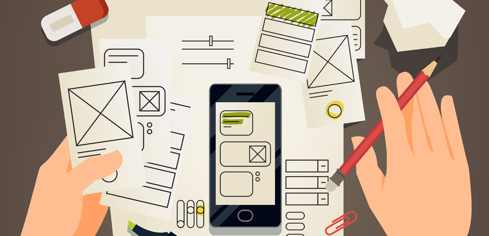
These blueprints will be my first take when it comes to my second website design. These designs are prior to change depending on different opinions as well as suggestions, constructive criticisms and more.
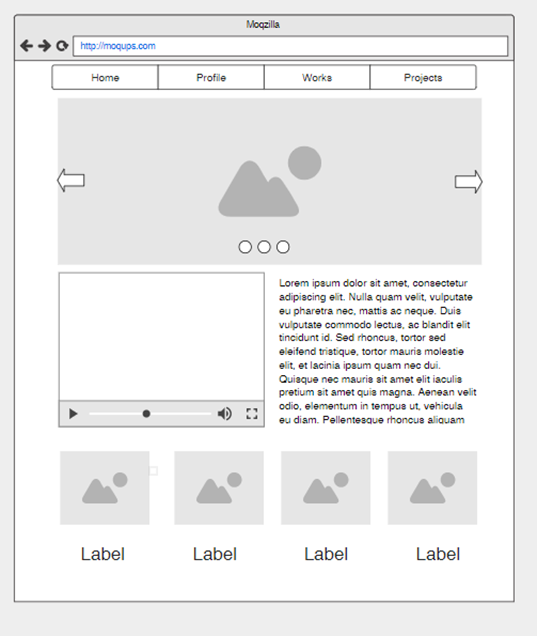
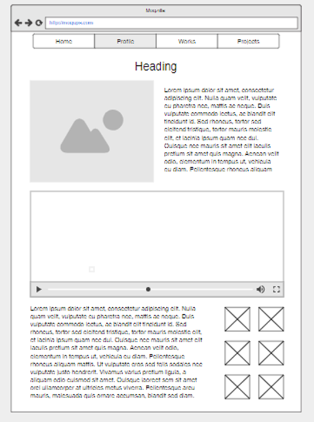
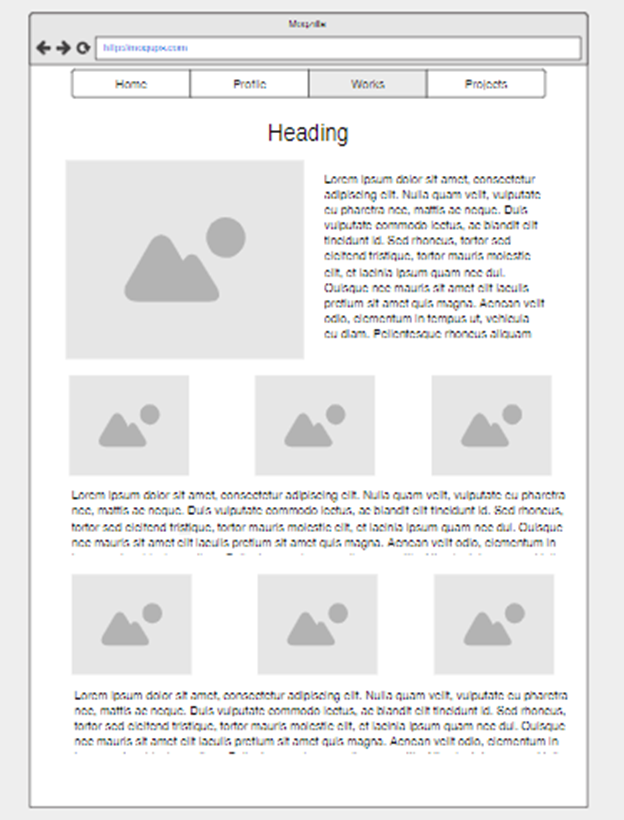
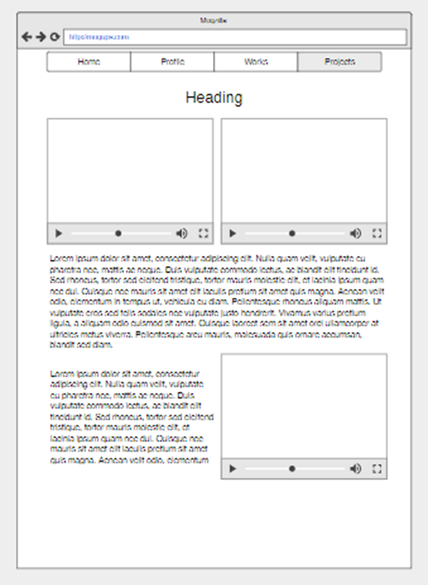
Date: 07/09/20
Category: A3
Invitation Design Activity
A4
How can we improve this?
Simply breaking it down into pieces.
Getting the main points such as:
>What: After-dinner Party
>By whom: Robert and Alexandra
>Where: The Pad
>When: June 30, 2012 at 9:30PM
>Adding contact number/s and RSVP date
What would be the objective function?
>The passage is all about Robert and Alexandra’s after-dinner party.
>Wine and nibbles will be specifically served
>This will happen on June 30, 2012 at 9:30PM
>This will be held on the pad
>Contact the two when direction is needed
>RSVP on/before June 1st
Create your own design/version of the passage.
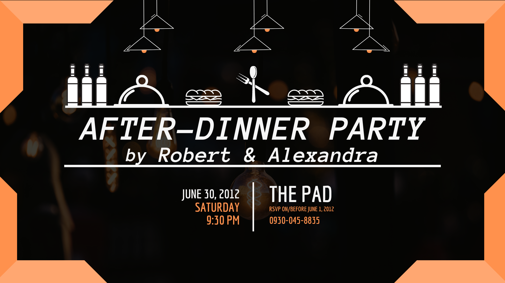
Date: 12/10/20
Category: A4
What is User Design?
G1
1. What is Design?
Design is the arrangement of certain necessities such as texts, buttons in an application or website. It is the overall style, theme, blueprint of the said project.
Without design, the project made by the developers will look dull and there will be a high change that it will not attract clients/customers, leading to project failure.
2. User Design
User Design is divided into two parts: first is the user Interface design that includes positioning of texts, certain icons and such, whereas the second one will be the User Experience design that sets the experience or mood of the application and how the application will make the user feel.
It is also like a criterion that developers need to follow or use it as a guide.
User Experience as well as User Interface will be further discussed in the next question.
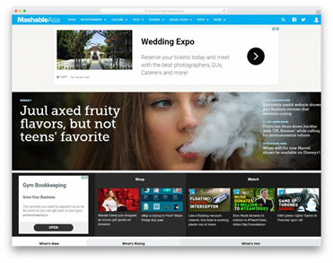
User Design
Photo from: https://colorlib.com/wp/newspaper-website-design/
3. What is the difference between User Experience Design and User Interface Design? Why does it matter?
User Interface Design or UI is the arrangement of different icons, buttons that the user can interact to connect to the application itself. In addition, this is where the user and the application interact to each other and perform specific tasks offered by the various instructions given by the developer/s, respectively.
On the other hand, User Experience is connected to the design made by the developers. The experience it gives to the user is the crucial data the developers must take note of. It is the overall meaning experience, mood, of the users.
Without proper UI handling, the comfortability of the users will be greatly damaged and thus, making the customer unsatisfied to the positions of the things inside the application. Wherein Without proper UX handling, the user will be overwhelmed or get confused when a new term is exposed to them. But with proper UX handling, the user will be familiar as well as feel comfortable while using the application. The functions, placing, colors and such will have an impact to the experience of the users.
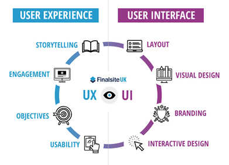
User Experience vs User Interface
Photo from: https://www.finalsite.com/blog/p/~board/b/post/what-is-user-experience
4. Who are the users? Why are they important?
The users are the target audience of a specific team. They are not just the people who gives crucial data, but they can also be your future clients. They are important to the team because they provide meaningful suggestions and experience for the team to improve and take care of. Without them, the application will be more likely a failure since you will lack user empathy that will lead to user and clients not using or buying the application.
Different users
Photo from: https://networknuts.net/user-account-management/
Date: 03/09/20
Category: G1
What is Design Thinking
G2
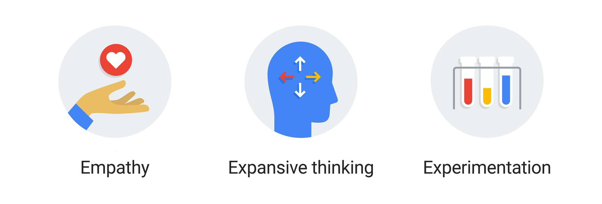
In my take to design thinking, it is a process of thinking a design of a certain product that will contribute meaningfully to the clients, as well as customers. The “User Design” of a product will be crucial for design thinking since it includes User Interface, which is the arrangement of different icons, buttons, symbols, indexes and more. It also includes User Experience which describes the overall experience of the user or client when using your product; this will also contribute to the overall rating of your design. Due to this, these two will have a great impact to your design which can either be a big hit or a big miss depending on how you handle these two.
Furthermore, design thinking also requires the development team to use User-Centered Design Process wherein these are: Gather User data, Analyze the data and identify the pain points, with enough data accumulated the development team will be able to ideate different designs of the said project. Next would be design your project. After doing so, assess if your design worked well not only to your clients but also to your personas, and finally deploy your project if the clients does not have any more alterations to suggest.
To further support the statements above, according to Dam and Siang (2020) “ Design Thinking is an iterative process in which we seek to understand the user, challenge assumptions, and redefine problems in an attempt to identify alternative strategies and solutions that might not be instantly apparent with our initial level of understanding. At the same time, Design Thinking provides a solution-based approach to solving problems. It is a way of thinking and working as well as a collection of hands-on methods.
It also revolves around a deep interest in developing an understanding of the people for whom we are designing the products or services. It helps us observe and develop empathy with the target user. Design Thinking helps us in the process of questioning: questioning the problem, questioning the assumptions, and questioning the implications. Design Thinking is extremely useful in tackling problems that are ill-defined or unknown, by re-framing the problem in human-centric ways, creating many ideas in brainstorming sessions, and adopting a hands-on approach in prototyping and testing. Design Thinking also involves ongoing experimentation: sketching, prototyping, testing, and trying out concepts and ideas.”
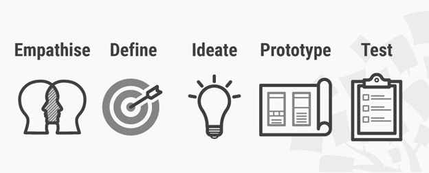
To reflect on the given statement, design thinking is more that it meets the eye, it has a lot of work to go through in order to be successful. It is not something that the development will do and will be immediately successful. It requires us to understand and empathize our target audience to catch their attention as well as understand their perspective when it comes to different circumstances. After understanding our target audiences. The next step would be the challenging assumptions wherein the development team will ideate various designs to have a solution for the gathered information from the users. After doing so, it is said that we need to redefine the problems the development accumulated in order for them to solve further unseen problems, with this, the users will have a higher chance of capturing the empathy and appreciate the design made by the development team. It is also discussed that Design thinking also undergo different stages to be effective which are: (1) sketching, (2) prototyping, (3) testing, (4) trying out concepts and ideas.
Additionally, according to Stevens (2019) “Design Thinking is an approach used for practical and creative problem-solving. It is based heavily on the methods and processes that designers use (hence the name), but it has actually evolved from a range of different fields — including architecture, engineering and business. Design Thinking can also be applied to any field; it does not necessarily have to be design specific.” Stevens furthermore discussed Design Thinking with four principles and classified them as:
The 4 Principles of Design Thinking
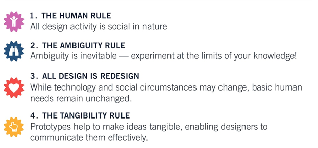
The human rule: No matter what the context, all design activity is social in nature, and any social innovation will bring us back to the “human-centric point of view”.
The ambiguity rule: Ambiguity is inevitable, and it cannot be removed or oversimplified. Experimenting at the limits of your knowledge and ability is crucial in being able to see things differently.
The redesign rule: All design is redesign. While technology and social circumstances may change and evolve, basic human needs remain unchanged. We essentially only redesign the means of fulfilling these needs or reaching desired outcomes.
The tangibility rule: Making ideas tangible in the form of prototypes enables designers to communicate them more effectively.
To reflect to Steven’s statement, there are four principles of design thinking namely: (1) The human rule wherein my understanding towards it would be that all the designs the development team will make or develop should always go back to “human-centric point of view” since clients as well as customers will be our main users for our projects. (2) The ambiguity rule, wherein the development team must be able to test their limits when it comes to experimenting because whenever the development team will use different perspective/s, they tend to solve unseen problems in the future. (3) The redesign rule, all designs are prior to change since the development team’s clients and customers will surely have different needs in the future; hence, it will be better if the development team will be agile enough to work and find different kinds of solution to solve these problems whenever they start occurring. (4) The tangibility rule, where ideas are tangible in form of prototypes to make their work more efficient since they will be communicating not just in their team but also in their clients making the project more agile and changes will not cost them a lot in the future.
Date: 03/09/20
Category: G2
What is Prototyping?
G3
Prototyping is the stage where the developers will create a blueprint of their current project; this blueprint is subject to change since it will be evaluated by different persons such as the interviewee, client, or even some of the target audience the developers are aiming for.
As far as I remember, there are in fact three different fidelities when it comes to prototyping. We can classify them or divide them into three namely “low-fidelity”, “medium-fidelity”, and lastly “high-fidelity”.
Low fidelity prototyping can either be a sketch or can be done using a program when doing wireframes. It is believed to be minimal or little effort as possible, because with this kind of fidelity the interviewee will automatically think that the developers are still open to changes as well as they will not be shy to tell their wants as well as their needs when it comes to the developer’s project. It will also benefit the developers since they only invested minimal or little effort, the required changes of the interviewee will be easier to apply because low fidelity prototypes are easy to alter. Next would be the medium fidelity prototyping which is not included in the guidelines but I guess I’ll just briefly include it here, this only includes the basic functionality of the website, some key elements so that the interviewees will have visuals, with this, they can have more feedback to rely on. Lastly, high fidelity prototyping, it is commonly done before the product release. Moreover, it is used if the developers already implemented their design of the project or website. The developers as well as the interviewees will now review the functionalities, flow, design elements and such before releasing it in the market. The attachments below will provide example in the said fidelities.
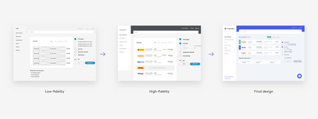
Prototyping is important because it offers various benefits when it is done properly, after all the main goal of which is to set the direction of the website’s design and fulfill its goals, the developers will obtain firsthand resources in the said interviews which will be crucial in the overall progress of the said website. With this crucial information, the developers can focus on what should they do or implement after; this also reduces the risk of failing after the final production because the developers are working side-by-side to their clients.
Date: 28/09/20
Category: G3
My First Few Weeks of USERDES Class
R1
My first few weeks of USERDES Class was quite flabbergasting since there are somehow a bunch of stuff to work with in a single subject but I realized it was also for me in the long run. I also think that with these various activities, LinkedIn videos, and such, will help me improve myself as well as the way I think or how I will use different perspectives in certain situations or circumstances. But I can say that there are times my anxiousness gets the best of me wherein it affected my overall performance not only to this class but to the entire subjects I am attending every week.
Furthermore, at first it was a bizarre adventure as a whole since I was adjusting myself from the traditional way of learning to the digital way or may I say the new normal, and I know everyone is adjusting; we are all doing our best in order not to fall behind. With me watching different lectures of professors in different LinkedIn topics, I realized that I became a slow learner in the past few weeks. There was this moment where I got stuck in a 2-minute video clip of Diane Cronenwett, I kept repeating the same video for almost 10 minutes for me to understand the lesson the professor is teaching. Then, I realized I was adjusting, it was one of the most unhappy realization I had because since when I was younger, I am that kind of person that does his best and gives all the effort I can and sees progress but this time it is in fact different from the me I was used to. It took numerous days for me to adjust my subconscious mind as well as my physical self to the new normal and I can say in my third week of classes that I can see myself some progress unlike the first weeks. I can now focus better than I do before since I can grasp some information already faster than my previous weeks.
When it comes to USERDES Class specifically, I find it amazing to be honest since I never knew some terminologies before such as UCD, how to prototype different software, different mobile experiences and how to deal with them, creating low fidelity prototypes to different kinds of platforms such as watches, TVs, mobile phones, tablets, and more. I also had fun watching the recent TED Talk by Don Norman:3 ways good design makes you happy since he talked about optimism and how to look at things even though they look weird at first. I also enjoy the IDEO: Design Thinking Mindsets because somehow it restored a piece of confidence I lost because of my past experiences.
Overall, I give this subject a thumbs up because even though there are various activities, these said activities helped me to improve myself and I can say that I will be using the information I learned from it in the future happenings or jobs I will be applying for. Thank you miss Jen for giving us knowledge and additional information as well as inspiration to keep working.
Date: 07/09/20
Category: R1
Need Finding: Design Thinking Process
R2
After the few meetings me and my groupmates had, this would be the process we went through, the problems we faced, and how we handled it. To begin, firstly we enumerated around three to four problems around us and then analyzed the variables if we can measure the progress or the data if ever there are some. After doing so, we decided to come up to a specific problem and made a problem statement for it. Moreover, we decided to create a PowerPoint to identify our Quotes, Pain points, and the Goals for our problem; we started listing three to five at each point at first, and then identified more later. After the presentation day and presenting the PowerPoint in the class, we noted and done the suggestions made by our classmates as well as our professor. Afterwards, we spent our whole weekend creating our storyboard to finally present it on Monday. My plan right now would be editing the whole thing to insert the Quote, Pain point, Settings, Problem, as well as the possible solution for each one of them.
The problems we faced would be the following: firstly, we had trouble thinking what are the possible problems other people are facing and it took us time to enumerate the possible topics. We solved this by simply going out of our boxes and thought of a specific role in the community and empathized them. After doing so, we defined our target audience as well as their problems, in our case dog owners; we also defined how can we help them and currently ideated for a possible solution.
Next problem specifically for me would be my personal problems as well as my high anxiety. The last problem we had and currently having would be our internet connection, since the three of us, as far as I know has random internet disconnection for hours and that is our major hindrance right now when it comes to groupings.
Date: 21/09/20
Category: R2
Need Finding: Design Problem
R3
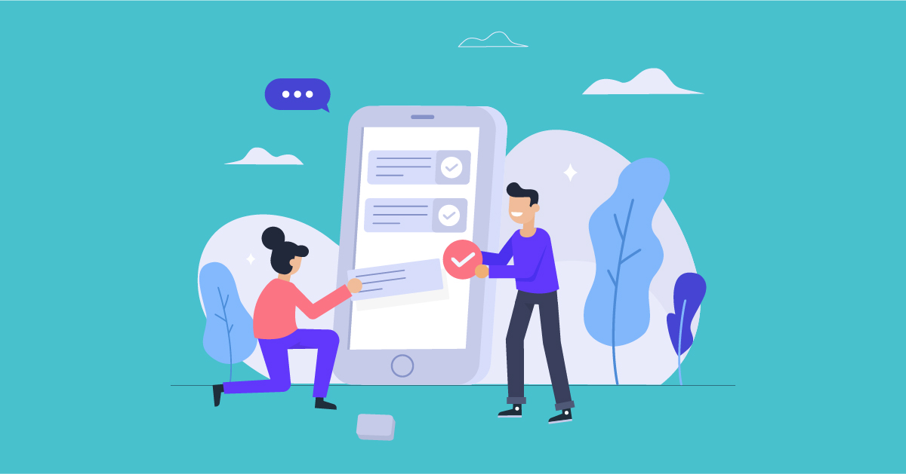
After the few meetings me and my classmates had, either through MS Chat or Messenger (because it is more accessible and we have internet problems, Messenger tends to have limited free data but free data is free data).This would be the challenges of how we identified our design problem as well as how we found our possible solution to the said problem. To begin, we identified our variables available at the moment, which lead us to having the different Dog Owners as our target audience with their numerous problems such as being jampacked due to work and classes, time of pandemic, and many more to list. Next, we empathized them so that we will be able to identify their main concerns as well as their problems; this includes identifying what services do they need, how can we cater them, how can we satisfy them. After doing so, we created a PowerPoint presentation as said in my R2 Activity, and revisions as well as creating our storyboards have been made. We as well presented our PowerPoint presentation and consulted to a different group to note their recommendations about our topic and we as well gave advices to the groups that were assigned to.
This morning, we consulted to miss Jen wherein she said that we should focus now in one solution, wherein me and my team immediately had a meeting in order to set things and fix them as soon as possible. We then decided to have a topic focusing on online dog grooming, the concept would be via website just like the original possible solution but now, the customers will be booking their appointment so that our dog groomer will be deployed to the address given by the customer.
Due to the pandemic, we will ensure that our service when it comes to the dog groomer’s tools, accessories, and even uniform will be properly sanitized. When it comes to the overall progress, my task for today in this subject would be dividing the works into three wherein me and my teammates will be working on this until Wednesday and hoping that we will have an excellent quality of PowerPoint presentation that will be presented as far as I remember, on Thursday. Additionally, I will be conceptualizing the possible quotes, pain points, or even goals if ever I can make them today. If ever I cannot make it, I will be adjusting our schedules; but we will still try to do our best to accomplish the tasks.
Date: 28/09/20
Category: R3
Information Architecture
R4
After the discussion held in the meeting last synchronous session, me and my other classmates learned something new. It is called Information Architecture which organizes various information to make it clear for the readers.
We can see almost everywhere how these people organizes different kinds of information so that each one of us will be guided accordingly. Without this, chaos will be noticeable in the society while finding our wanted information. It is discussed in the meeting that there are different fields when it comes to organizing patterns, some of which would be: Ontology, which is the study of the relationship of a being. Taxonomy which organizes the labels as well as categories of certain entities such as animals. Choreography which focuses on specific types of movements to be executed by dancers.
There are numerous organization schemes discussed wherein some of which would be “Date” that explains that the recent posts will be placed at the top of the person’s newsfeed instead of below. “Geography” explains the photos and texts provided in a gallery to cue the viewers what place it is featuring. “Audience” explains me system as well as accounts to provide maintenance for the overall site, this also includes different features for different audiences such as students, performers, professors, et cetera. Next would be “Task” which would focus more on offering the viewers certain tasks that they would want to do, such as banking deposits as well as withdrawal. “Topic” which explains the site being organized to different links concerning different topics. “Category” wherein the items are categorized according to their use as well as type such as accessories, hats, beauty products and such. These organization schemes comes with different types of navigation such as “Global navigation” which allows access to major parts of the site, “Local navigation” which allows the viewers to move around the section, “Contextual navigation” that includes links to certain information desired, “Supplemental navigation” such as index that is organized alphabetically.
With this said as well as briefly explained, we can say that information architecture has a significant impact to a person’s life when it comes to finding information. It acts like a map to the viewers that enables them to navigate throughout the site. Moreover, as said in my previous statements, without this information architecture chaos will surely prevail, and it will take us a longer time to find our desired information.